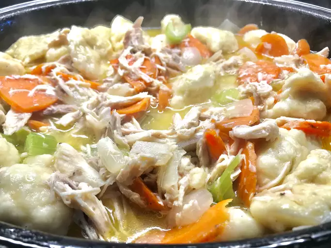

Old-Fashioned Chicken and Dumplings

Description
Few things scream "comfort food" quite as loudly as old-fashioned chicken and dumplings. This satisfying chicken and dumplings recipe is as good as it gets!
Ingredients
Soup:
- 7 pounds cut up chicken pieces
- 4 cups chicken stock
- 2 onions, chopped
- 3 stalks celery, chopped
- 2 teaspoons salt
Dumplings:
- 1 large egg
- ¼ cup milk
- 1 ½ cups all-purpose flour, divided
- 1 ½ teaspoons baking powder
- 1 teaspoon salt
- 2 tablespoons cold unsalted butter
- 1 tablespoon chopped fresh parsley
Gravy:
- 1 cup water
- ½ teaspoon ground black pepper
- 1 tablespoon chopped fresh parsley
Steps
- Start the soup: Place chicken pieces in a large pot; add chicken stock, onions, celery, and salt. Bring to a boil over medium-low heat, then simmer, partially covered, until chicken is tender, about 15 to 20 minutes.
- Meanwhile, make the dumplings: Beat egg and milk together in a large mixing bowl. Mix in 1 cup flour, baking powder, and salt. Grate cold butter into the wet flour mixture; stir in parsley.
- Dollop 6 large spoonfuls of dumpling mixture onto the top of the simmering chicken. Cover the pot and steam dumplings until fluffy, 10 minutes more.
- Remove dumplings and chicken pieces to a large dish; shred chicken and discard bones. Cover and set aside, keeping warm.
- For the gravy: Strain stock left in the pot, pressing the vegetables to release more flavor; return stock to the pot. Whisk water with remaining 1/2 cup flour until smooth; stir into the strained stock. Season with pepper and bring to a boil, stirring constantly, to thicken.
- Stir in chicken and top with dumplings. Serve with parsley.
Home